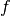
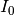
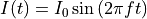
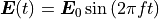
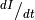
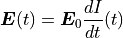

FAQ¶
Can SimNIBS simulate TACS?¶
Yes! Frequencies used in TACS are usually low, so we can employ a quasi-static approximation. This means that if we have a sinusoidal current with a frequency  and amplitude 

The Electric Field will vary in times in phase and with the same frequency of the input current

Where is the electric field obtained with the current .
When multiple channels are involved, and especially when they are out of phase, more care needs to be taken. Please see (Saturnino et. al., 2017) for a more detailed discussion
What is the dI/dt in TMS simulations?¶
The dI/dt is the speed of variation of the current through the coil. This values depends on coil model, stimulator model and pulse intensity. In some stimulators, this value is displayed in the screen after a pulse. The variation with pulse is usually linear, meaning that an 80% maximum stimulator output will also give 80% of the  value if the maximum stimulator output.
The also varies in time. We normally take maximum value, which usually happens right at the beginning of the pulse.
The Electric Field varies linearly with

Where is the electric field obtained with a unit value
Are the SimNIBS coordinates in MNI Space?¶
No. SimNIBS uses coordinates defined in the subject space. But we provide many tools to transform between subject and MNI spaces. Please see Coordinates in SimNIBS for more information.
Electric Field Norm? Normal?¶
The Electric Field is a vector field, meaning it has a direction everywhere in space.
Vectors are hard to visualize (even though you can do it in SimNIBS!), so we often use scalars to represent information abut the vectors. The one we use the most is the norm, which is the length or strength of the vector, irrespective of direction.
Another useful quantity is the normal with respect to a given surface, normally the middle cortical surface. The normal gives us the field that is incoming or outgoing from the surface.
The effect that the different polarities have on neuronal modulation suggests that the field normal is important in tDCS. For TMS, it is harder to determine which field component if any is more relevant for stimulation.
Which Units does SimNIBS Use?¶
SimNIBS almost always uses units in the International System of Units (SI units). The exceptions are head model node positions, which are in millimiter and current values in the GUI, which are in mA.
This means we have the units:
Quantity |
Units |
|---|---|
Electric field (and respective norm, normal, …) |
V/m |
Current Density (and respective norm, normal, …) |
A/mm² |
Conductivities |
S/m |
Electrode Currents |
mA (GUI) / A (scripts) |
Coil dI/dt |
A/s |
Mesh node positions |
mm |